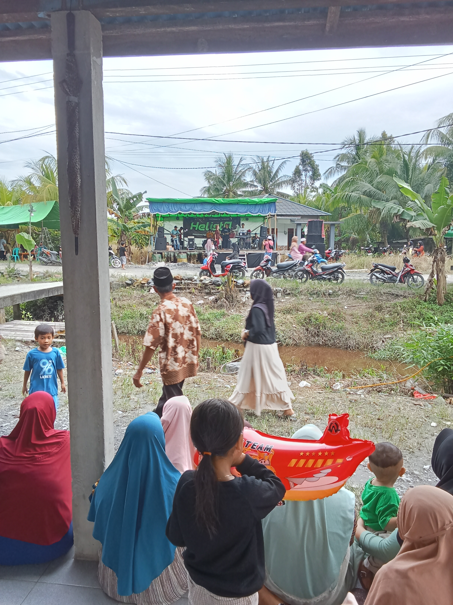
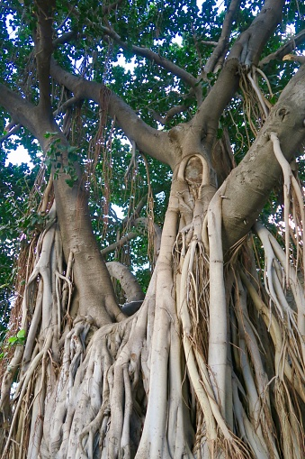
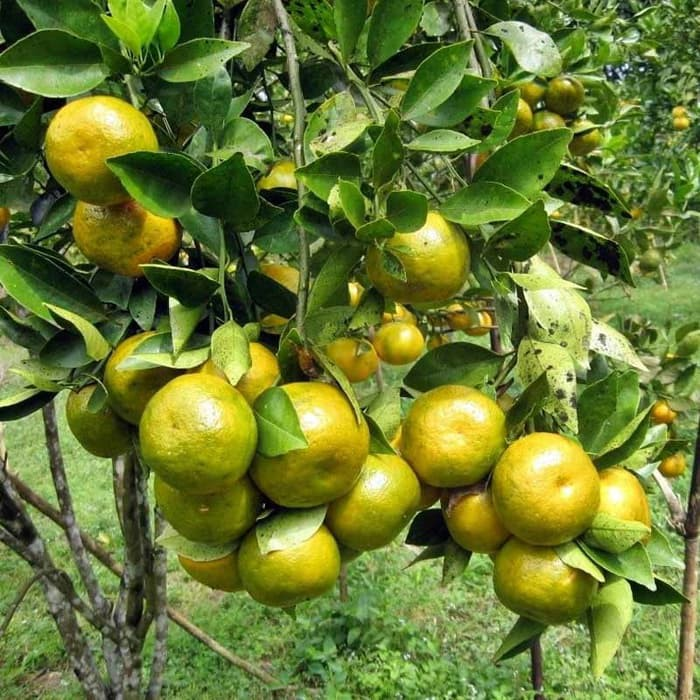
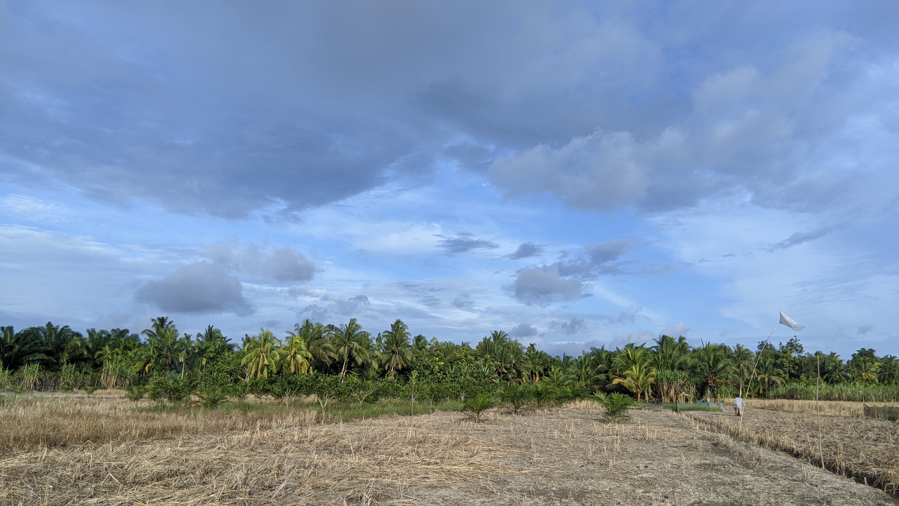
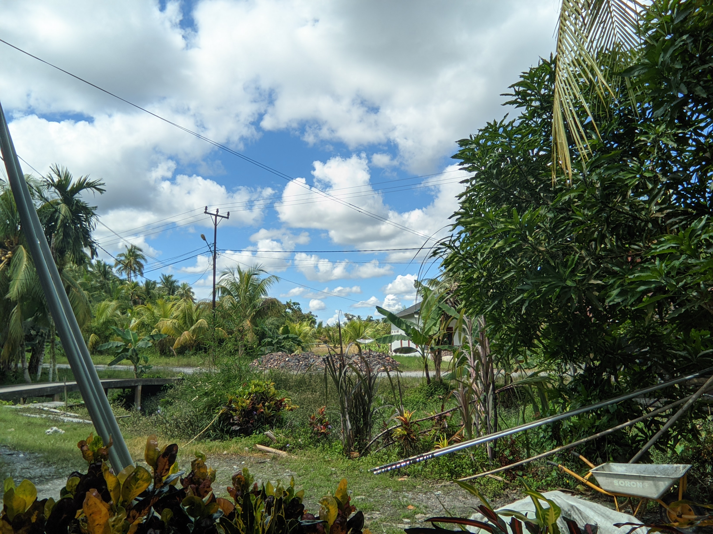
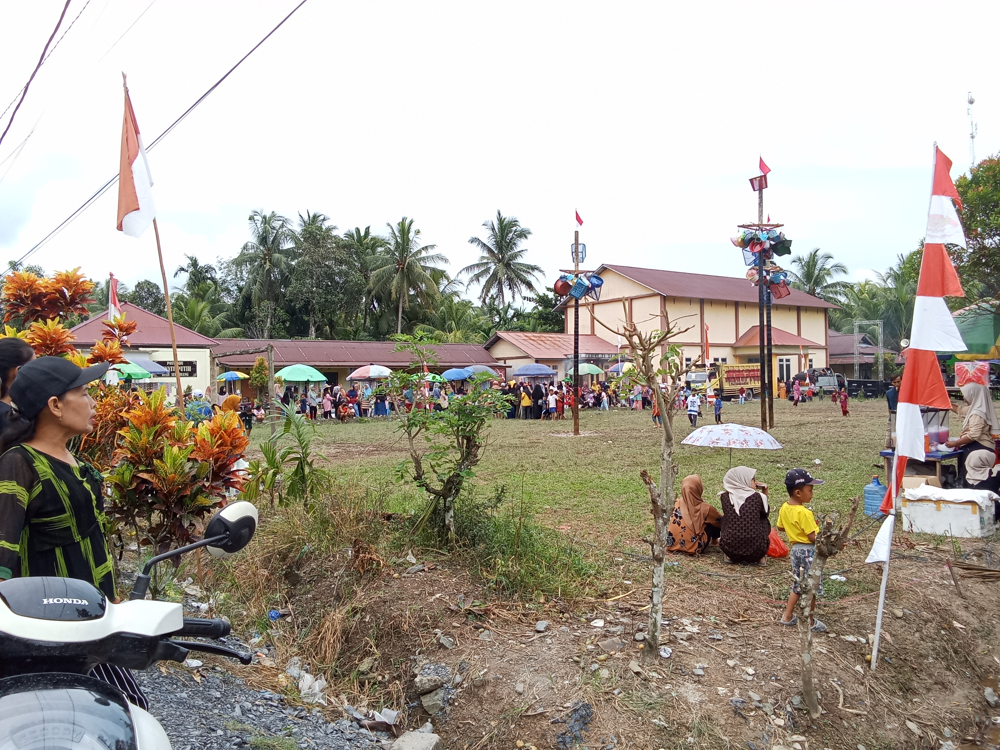

Dokumentasi lingkungan, masyarakat, dan potensi desa.

Lingkungan Desa Serindang

Simbol cerita asal nama desa

Komoditas unggulan masyarakat

Salah satu aktivitas masyarakat

Potret alam dan lingkungan desa

Kehidupan masyarakat desa